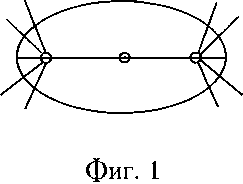

Беседа 2256 от 3877 · Беинса Дуно
Качества на реалното
„Отче наш“
Прочете се резюмето от темата: „Ползата от богатството и сиромашията“.
Прочетоха се темите: „Най-малката и най-голямата спънка в живота“; „Отличителните черти на минералите и растенията“. За следващия път пишете върху темата: „Съществени качества на свободата“.
„Голямо и малко“. Каква е разликата между голямото и малкото? В геометрията кой е най-големият ъгъл? (360 градуса.) Има ли такъв ъгъл? (Да, то е цял кръг.) Да кажем, че имаме една плоскост. Тя е равна плоскост. Окръжността има 360 градуса. Значи една окръжност е създадена от колко ъгли? − (От четири прави ъгли.) Вземете змията, лицето ù е свързано с гръбначния стълб, няма никакъв ъгъл, сраснато е с гръбначния стълб. У кучето имаме 45 градуса ъгъл. У слона имаме 90 градуса. А у човека 180 градуса. Лицето на човека е успоредно с гръбначния стълб или на ъгъл 180 градуса. При 180 градуса имаме две паралелни линии. Лицето е успоредно на гръбначния стълб. Между две успоредни линии какъв ъгъл съществува? (Два прави ъгъла.) Ако съберем 4 прави ъгъла по 90 градуса правят 360 градуса. Един ъгъл от 360 градуса към кое измерение спада? На физическото поле, в света, в който живеем, начертайте такъв ъгъл от 360 градуса. Ъгъл от 90 градуса може да начертаете, от 179 градуса може да начертаете, но щом дойде до 180 градуса, не може да начертаете, образува се една права линия повидимому. Двама души не си хармонират. Те съставят един ъгъл. Ъгълът се образува, когато един от двамата е на противоположната страна, има два възгледа, но има и една допирна точка и колкото противоречието е по-голямо, толкова ъгълът е по-голям, а при най-голямото противоречие, те образуват права линия; при най-малкото противоречие се образува права линия. Где се примиряват тогава? Где може да се прояви примирението? Где е най-голямото противоречие? Тук навлизаме в друга област. Какво отношение може да има между един ъгъл и противоречието? Вярно ли е, че двама души, които имат противоречие, образуват един ъгъл? Това аксиома ли е или предположение, което трябва да се докаже? Допуснете, че вие сте двама души и може да образувате един ъгъл. Хващате се за ръцете и си теглите краката настрани. Какво се образува в същото време между краката? Правили ли сте опити какъв ъгъл може да образувате? Някой път сте се хващали за ръцете, но не сте измервали какъв ъгъл може да се образува? (Остър ъгъл.) Ние живеем в един огънат свят. В света плоскости никъде няма. Целият свят е една огъната площ, корубеста. Теоретиците казват, че успоредните линии се пресичат някъде във вечността. Щом се пресичат, това са линии, които вървят по огъната площ. Има ли такава площ, която е безконечно дълга? Какво се разбира, когато в геометрията се казва, че успоредните линии някога ще се срещнат. Ако те са успоредни в цялата дължина, как ще се срещнат? (Този израз е извлечен от перспективата. Там две успоредни линии се пресичат в безкрайността. В перспективата става това.) За пример да вземем най-големия човек и най-малкия човек. Кой ще бъде най-големият човек и кой ще бъде най-малкият човек. Най-малкият човек, който да наподобява човека, на когото удовете да са така развити, както у големия човек. Колко сантиметра може да бъде такъв човек − един човек, когото природата е направила някъде? (35 см.) Един англичанин го носил в джоба си. (Вестниците пишат за едно джудже от 30 см.) Имате едно пространство, затворено между две линии, които имат един общ център, пресичат се някъде. Нали две линии трябва да се пресичат някъде, за да образуват ъгъл. Но ако две линии не се пресичат някъде, може ли да се образува ъгъл? − (Не може.) Значи, щом се образува един ъгъл между две линии, какво отношение се образува между тях? (За да имаме ъгъл, трябва да имаме две линии или общ елемент в пресечната им точка.) Две линии са граници на две плоскости. Плоскостите са граници на един куб. Осем куба са граници на един тесаракт. Под точка ние разбираме, че имаме две линии, които се пресичат. Съществува ли линията като реалност в света? (Не съществува.) Точката реално съществува ли? − (Също така не съществува.) Как така говорим за неща, които не съществуват? За пример звук съществува за един човек, който има слух, ухо. За един човек, който няма ухо, слух, съществува ли звук?
Сега минаваме на друга една страна. Някой път вие чувствате, че имате едно неразположение някъде си, но не знаете къде е. Някой път имате едно неразположение, чувствате го, но не знаете къде е. За пример, много пъти казвате, че скърбите. На кое място се намира скръбта?
Казвате: „Скръбно ми е.“ Но на кое място се намира специфично скръбта. Всички страдате, но аз бих искал да ме запознаете с мястото на вашата скръб, с жилището ù, на кое място живее тя? Щом съществува, трябва да живее някъде. (В слънчевото сплитане.) Тогава лесна работа е. Хващате я и я изваждате навън. А радостта къде е? (Пак в слънчевия възел.) Вие казвате, че е пак в слънчевия възел. Проверете у радостния човек, ще видите, че вратът му има по-голям диаметър, той е по-широк. Щом е скръбен, има различие вече в мярката, вратът му е по-тесен и ние отвън можем да измерим точно степента на неговата скръб и степента на неговата радост. Сега какво разбирате вие под думата скръб? Как я чувствувате? Какво нещо е скръб? Някой човек скърби. За какво скърби? Скърби, че няма пари. Какво отношение има между него и парите? Парите никак не скърбят, а пък той скърби за парите. Парите да са болни, не са. Глава да ги боли, не. Да са гладни, не са. Дърва да нямат, не. Всичко си имат, а пък при това скърбиш за парите. Питам сега, как може да скърбиш за този, който не скърби за тебе? Нали законът е: Ако те обича някой, и ти го обичаш. Тогава, ако скърби някой за тебе, и ти може да скърбиш за него. Майката може да скърби за сина си, че го е сполетяло нещо, но и той скърби за нея. Някой казва, че е скръбен, че е сиромах. Скърби за сиромашията, а пък сиромашията нито пет пари не дава. Срещали ли сте някъде сиромашията? (Има я някъде.) Къде е? (На Изгрева е доста голяма.) Аз съм срещал някои хора, тежат повече, а някои по-малко. Забелязал съм едно съвпадение, че тези, които са сиромаси, тежат по-малко, а които са богати, тежат повече. Но сиромашията досега не съм я срещал, не съм я намерил, сиромаси хора, да, но сиромашията не. Откъде произтича тази дума сиромах, беден? − (Липса на условия.) Болният човек е резултат от липсата на здраве.
Имате семка, имате орех, нали така? Сега едно малко разсъждение. В този орех имате една възможност. Да кажем, че имате възможност да направите с този орех един обяд, но във вас се заражда идеята да посадите този орех. Този орех като го посадите в земята, той се поляризира и образува елипса, но това, което е за ядене, няма го. Не е годно вече за ядене. Той се е поляризирал в две направления (фиг. 1). Два полюса е образувал. От единия полюс и от другия полюс излизат разклонения − едно нагоре, а другото надолу.

Още едно сравнение. Може ли водата да излезе по-високо от своя източник? Може, ако има някакво изкуствено налягане, по естествен път не може. Значи ще излезе до същия уровен. По естествен ред синът не може да бъде по-високо от баща си. Това, което бащата знае, и синът ще го знае. (Христос беше по-високо от Йосифа, баща си.) Той не беше баща му. (Библейският Йосиф излезе по-умен от баща си Яков.) Не беше. Когато Яков дойде при фараона, той благослови синовете си, а Йосиф не благослови своите синове. Само силният, умният благославя. (Как Каин излезе от Адама?) От Адама не излезе. Всичко, каквото се пише и се говори за Слънцето, вярно ли е? Това са относителни работи. В някои отношения е вярно, привидно има нещо вярно. Има две неща. Не зная дали да го кажа на вас или не. Цялото никога не може да стане по-голямо от себе си. (Може да се надуе.) Щом го надуват, то не е цяло, а е част, и човек, който расте и се развива, той не е цяло. Цялото не седи в човешкото тяло. Не седи и в неговият ум, понеже и умът расте. Нещата, които растат, не са цели. И умът му не е цял, и сърцето му не е цяло. Противоположното на цялото кое е? (Частите.) Под най-малкото разбираме, че няма да има нещо, което да го измени. Питам: Тогава на какво е свойствено най-голямото? − На цялото. То се нарича най-голямо, понеже по-голямо от него няма. И някои неща наричаме по-големи, понеже от тях по-големи няма. Най-малкото се нарича така, защото от него по-малко няма. (Пътят между най-малкото и цялото какъв е?) Пътят е път за най-малкото, да може да отиде при най-голямото. Към голямото има много пътища, а към малкото колко пътища има? Голямото и малкото се отличават по това, че за голямото има безброй пътища, а за малкото има само един път. Това, което има само един път, то е най-малкото. За да се отиде до него, има само един път, а това, към което има безброй, неизброими пътища, то е най-голямото. Как ще определите най-голямото? Да добиете конкретна идея. Безброй пътища има към голямото, а към малкото има само един път. Така аз мисля. Така определям. Кое е най-малкото, към което има само един път. Някой казва: „Човек трябва да върви по правия път.“ Къде е правият път? Всички говорят за прави пътища, но къде са те. На земята няма прав път. Нагоре да вървиш, не е към слънцето, не е към месечината. Но къде е правия път? (Пак е нагоре.) Под думата нагоре трябва да разбираме най-голямото, а пък когато говорим за надолу, то е най-малкото. Те се отличават по две свойства. Щом се качваш нагоре към най-голямото, ти се разширяваш нагоре. Щом отиваш към по-малкото, там се стесняваш. Това са метафизични работи. Метафизиката е една гимнастика на ума, която може да ви докаже, че три е равно на две и две е равно на три.
Нали знаете онази приказка за кокошката? Един син като се върнал от странство, искал да докаже на баща си, че две е равно на три. Той казал на баща си, че по новото учение две кокошки са равни на три кокошки. Бащата се чудел. Той казал: „Синко, опит ще направим за това.“ И казал на жена си да заколи и да свари две кокошки. Тя като ги сложила на трапезата, бащата казал: „Едната кокошка е за майка ти, едната за мене, а третата за тебе. (Смях.) Това нищо не доказва. Това е един анекдот. Да допуснем сега, вие всички приемате, че има такива същества, които са завършили своето развитие и живеят някъде и те са, които ръководят съдбините на човечеството. Вие проповядвате това учение и казвате: „След като се помолих веднъж, отговори ми се.“ Някой път се молите и нищо не излиза.
Та казвам: Има неща случайни, но някой път има съчетания на условията, дето ние можем да мислим, че някои неща са станали точно заради нас. Например един селянин влиза в един град. Там направили арка, окичили града със знамена, за да посрещнат едно знаменито лице, което се връща в дома си. Селянинът казал: „Направиха арка и целият град беше окичен със знамена. Те знаеха, че аз ще отида.“ Той си мислил, че тази арка и тези знамена са заради него. Вие пътувате някъде, дойде вятър, раздруса крушите, изпадат крушите от дървото и ти кажеш: „Този вятър за мене подуха, за да паднат крушите. Това е от Провидението.“ Това може да бъде толкова вярно, колкото мисълта на оня селянин, който влязъл в града и мислил, че арките и знамената са заради него. Той има право да мисли така. Този вятър хиляди дървета разклати и повечето круши окапаха на земята. Тогава идва стопанинът, който има интерес; той не обича вятъра да му друса крушите. Ти минаваш и казваш: „Този вятър заради мене дойде.“ Онзи стопанин идва и казва: „Разбирам вятъра да събори една круша, две круши, а той събори всичките круши. Ти защо накара вятъра да събори всичките круши?“ Хванат те и те държат отговорен. Какво трябва да направиш, какво трябва да кажеш, за да се избавиш от отговорност? Ти ще дойдеш да философствуваш и ще кажеш на стопанина: „Ако имаше много круши по дървото, нямаше да бъдат толкова сочни. Крушите може да са повече, отколкото дървото може да отгледа и вятърът като ги раздруса, събори ги, останаха по-малко.“ Такава една философия ще кажеш.
Сега едно същество, за да ти помогне, какво отношение трябва да има към тебе, трябва да е будно неговото съзнание. Ние започваме със себе си. Най-първо сме будни към себе си, следователно усещаме, че имаме известно задължение за себе си, към своето тяло, защото знаем, че то ще ни бъде полезно. Какви качества трябва да има едно същество, за да ти помогне? Ти искаш то да ти помага. Какви отношения трябва да има към тебе? Трябва да е будно неговото съзнание. Ние започваме със себе си. Най-първо сме будни към себе си, следователно усещаме, че имаме известни задължения към себе си, към своето тяло, защото знаем, че то ще ни бъде полезно. Какви качества трябва да има едно същество, за да ти помогне?
Ти искаш то да ти помага. Какви отношения трябва да имаш към него? Да дойдем не до отвлечените, а до реалните отношения. Най-първо изучаваме реалното. Кое е реалното? Реалното е това, което при всички условия не се мени, а си остава едно и също. То е реалното. То не се мени. Щом нещо се мени, то не е реално, то е променливо. Любовта за да бъде реалната, тя не трябва да се мени. Силата, за да бъде реална, не трябва да се мени, здравето, за да бъде реално, не трябва да се мени. Щом се изменя това здраве, то не е реално. Питам тогава, скръбта реално нещо ли е? Не е реално. (Не е, понеже се изменя.) Здравето реално нещо ли е? То не е реално, понеже се изменя. Здравият става болен. Болният става здрав. Тогава нашето здраве ние го наричаме относително здраве. Скръбта ни е относителна скръб. Значи скръбта не е реална, а е относителна, понеже може да се изменя. Скръбта показва известни отношения само в дадения случай. Николай, как бихте изразили тези отношения в математиката? Когато двама души скърбят, как ги означаваме тия двама души в математиката, тия двама скърбящи? Един богат как ще го означат математически? (Той е растяща функция.) Какъв знак ще му турим? (Положителен знак.) А пък, който е сиромах, който постоянно осиромашава? (Ще му турим положителен знак, но той е намаляваща функция.) Да дойдем до известен ред разсъждения. Да допуснем, че имате едно пълно шише с шампанско. То е богато, пълното шише е богато, но дойде един ваш приятел и вие му налеете една чаша, после втора, трета, четвърта. Какво става с шишето? Обедняло е. Но шишето не е загубило възможността да забогатее пак. Значи формата си остава същата. Може да отидете пак да го напълните с шампанско и пак е богато. После пак може да го изпразните. Това шише, което е забогатявало и осиромашавало, какво е придобило? Като е осиромашало, изгубило е известна тежест. Но тази тежест, която е придобило, съществена ли е за шишето? Това, което е изгубило, съществено ли е? Пак не е съществено. Шишето си остава в своята форма. За шишето в дадения случай като че ли е безразлично. То казва: „Все ми е едно. Безразлично ми е кога съм пълно или празно.“ Учените хора казват, че когато шишето е празно от шампанско, в него има въздух. И като изтеглим въздуха пак има в шишето нещо, пак остава нещо в шишето.
Да допуснем сега друго едно сравнение. Пущат те в едно подземие, дето има каси и ти дават ключове, с които да манипулираш, да отваряш с тях тези каси и, каквото ти трябва, да си изваждаш. Но понеже тези ключове са цял сноп, едва може да ги смъкнеш. Даваш ги на друг човек да ги носи, а ти вървиш отпред, той отзад. Виждаш, че тоя човек е отишъл някъде, търсиш го, няма го никъде. Отиваш при затворените каси без ключовете. Какво ще придобиеш? Ще видиш касите, но всичко това е затворено. Богатство, пари има, но всичко е затворено с ключ. Онзи отива някъде и казва: „Тези ключове мога да ги продам някому, от един будала ги взех.“ И той се хвали на своя приятел с ключовете. Питам: Какво е придобил той? Онези, сиромасите са тези хора, които взеха ключовете на богатите. А пък богатите хора са богати, но без ключове, сиромасите са хора с ключове. Сиромахът има ключовете, а богатият касите. Имаме неразбиране помежду им. Богатият казва: „Аз да намеря ключовете.“ А пък сиромахът казва: „Да имам аз касите.“ Сиромахът може да работи. Това са ключовете. А пък богатият не може да работи. Той има касите. Какво трябва да прави сега? Разбиране трябва да има. Ще направиш съюз. Ти си сиромах, дойдеш при богатия, дадеш ключовете, той ти плати, дето си ги носил, и казва да си вървиш. Тогава какъв съюз може да стане? (Ще се уговорят всички точки.) Този договор, кой ще го изпълнява? Направили мишките договор с коткакта. Котката подписала, че дава свободен ход на всичките мишки. (Някои мишки искали да закачат на котката звънец.) Само на умрелите котки. От ваше гледище какви искате да бъдете? Може да кажеш: „Аз искам да бъда учен, но нямам условия.“ Някой ще ти помогне. Между 100 и 200 души бедни хора всеки казва, че иска да бъде нещо. Сега коя е чертата, която е свойствена за сиромасите? Може ли да ми кажете една черта, която е свойствена за сиромасите, и една черта, която е свойствена за богатите. Във физическо отношение всички богати се групират, на едно място се групират, а пък бедните не може да се съберат на едно място. Богатия си има звънец отдалече ще говори. Търговецът говори със звънец. Сиромахът трябва сам да говори. Богатият от къщи ще дрънка и ще поръча да му донесат едно кило захар, две кила ориз, а пък бедният човек, който няма звънец, не може да дрънка, той ще иде на бакалницата. Богатият отдалече дрънка, а пък сиромахът − отблизо. Ако вие дрънкате отблизо, какъв сте? − Сиромах. Ако дрънкате отдалече, какъв сте? Оплаквате се, че нямате близки. За да ви бъде някой човек близък, той трябва да бъде сиромах. Тогава изваждам извода: Близък човек е само сиромахът, а пък богатият е далечен. Близък може да бъде само бедният, а пък богатият − далечен.
Кое е онова, което заставя хората да обичат богатството повече, отколкото сиромашията? Я кажи, Николай, ти си учен човек. (Богатството подразбира онези възможности, а пък човек се радва на възможностите, а пък сиромашията всякога подразбира ограничение.) Хубаво, съгласен съм. Да кажем, зимно време е. Как бихте желали: в една неограничена стая ли да живеете или в една ограничена? Вие сте прави, че лятно време е хубаво да се живее в безграничното. Хубаво е да бъдете богати лятно време, но зимно време − в сиромашия.
Един българин ходил на гости и се спрял в едно далечно село. Влязъл в една къща. Те варили голяма патка. Като влязъл той, те скрили патката. Той чакал да сложат патката да ядат. Те обаче сложили малко лук и хлебец. Вечерта като спали, той станал, взел патката, турил я в торбата и казал, че бърза, понеже има много работа. Той казал още: „Моите патки са много несръчни, могат да ми направят голяма беля, отивам да уредя тази беля. Ако остана тук ще имам голяма беля.“ Като си отишъл той, онези си казали: Хубаво, че се освободихме от него. Отиват и виждат, че патката я няма. Той уредил въпроса с патката. Онези, които създали този анекдот, какво са имали предвид? Като дойде гостенин, нагости го с патката, за да не отиде цялата патка. Какво се крие още в тази приказка? Тя разкрива две неща: че онзи, който идва, е нечестен и онези, които го приемат, са нечестни. Те са скържави, мислят за себе си. Но и онзи, който идва на гости, и той е нечестен. И двамата мислят за себе си. Тази приказка иска да покаже, че онзи е много умен. Оправил си работата. Българинът казва: „Най-първо задигна патката, уреди си работата.“ Онзи, който създал тази приказка иска да каже друго нещо. Този морал се изразява в друго направление. Например вие намирате нари по пътя, защо ще връщате парите. Намерите по пътя някоя кесия с пари. Това е сварената патка. Ще я върнете ли? Някой път онзи стопанин, който е изгубил парите, е умрял и няма роднини. Казват, че трябва да върнеш кесията. Но казвам, че стопанинът е заминал за онзи свят и роднини няма. Какво трябва да се прави с парите? (Сегашните закони казват, че трябва да се върнат на властта, а тя ще ги предаде на правоимащия.) Представете си, че вас трябва да ви турят на едно изпитание, на едно изкушение, за да се покаже кой докъде е стигнал, какъв морал има. Трябва да ви турят на всевъзможни изпитания. Например някои от вас трябва да турят в богата стая, с богати яденета и да им кажат да не ги бутат. Три дена да не сте яли, ако ви гледат през малка дупка, какво ще правите? Най-първо ще се разхождате, но ще поглеждате наоколо и после ще погледнете яденетата. После какво ще направите?
Някой от вас ще турят в стаята пълна с каси, пълни със злато, пък ви трябват пари, трябва ви един апартамент. Искате да следвате в университета и си казвате: Еди-кой си моралист еди-какво си е казал. Мислете и погледнете касите. После пак кажете така и се разхождате. Все ще направите нещо: Хата олур. Могат да ви турят на ред други изпитания и някъде човек може да издържи, някъде не. Питам: Ако всинца ви прекарат на общо основание да минете през едно планинско място, дето има скъпоценни камъни, големи колкото кокоше яйце, колцина от вас ще минат, без да си вземат скъпоценни камъни. Най-малкото по два камъка ще влязат във вашите джобове за спомен, щом има много камъни, с вагони да ги носиш. Големият Господар, който е създал света, се радва, когато някой пренася нещо от едно място на друго. Например пуснете едно българско дете в една градина. Нападали са ябълки в градината. Ще му кажеш да не бута ябълките. Колко деца ще изпълнят това? Все ще имат в джобовете си по една-две ябълки. (Нападалите ябълки и без това са изложени на унищожение. Само децата да не късат.) Не, ние се лъжем, че са изложени на гниене. Например стопявате снега, разваля ли се той? Той се стопява, за да се прояви в друга, по-съвършена форма. Снегът, като се стопява, губи преди всичко своя цвят, а пък гниенето показва, че тази круша или ябълка ще стане годна, за да я яде човек. Земята и някои животни ядат изгнилото вещество. Но в прекия смисъл на думата вие сте прави − плодът ще стане негоден за човека. Първоначално плодовете са имали други качества, никак не гниели. Всякога си оставали пресни. Сега те са образували ред вторични качества, но първоначално не е било така. Например някой човек се ражда с първични дарби, които природата му е дала, но има и наследени от баща си, които също се проявяват. Желанието на човека да пие спиртни напитки не е от природата, наследено е да пиеш вино. Това не е природата. Това е вторичен навик, дошъл отпосле. Първоначално човек не е имал навик да събира, после се образувал навика да събира съкровища. У някои хора чувството за стяжение е по-силно развито, а у други хора е по-слабо развито. Вземете един кон или една кокошка, ако ù сипете една крина жито, тя, след като се наяде, ще почне да рови с краката си, ще остави житото и ще замине. Ако оставите пред една катерица зрънца от царевица, след като се наяде, останалото ще го прибере и ще го складира някъде. Мравките, като намерят жито, ще го вземат и ще го скрият някъде. Кокошката е нехайна в това отношение. Тя, каквото намери, казва: Аллахкерим. Има вторични качества, които отпосле са израснали, през течение на хилядите години на развитие. Нашите растения са се развили при различни условия. И малките организми, мухите, рибите, са се развивали при известни условия. Тях природата ги е впрегнала да работят при разни условия, за да родят нови форми. И богатството, и сиромашията, всичко това природата го употребява като импулс, като подтик. Защото богатството и сиромашията са средства, за да работи човек. Богатият е заставен да мисли в едно направление и сиромахът е заставен да мисли. Богатият мисли това, което е придобил как да го запази, а пък сиромахът мисли как да придобие нещо. Богатият е консерватор, а пък сиромахът е демократ. В една консервативна партия има нещо придобито. Тя мисли как да го запази. Искат да се образуват закони, за да се запази придобитото. А пък сиромахът няма нищо и търси начин да добие това, което няма. Да кажем имате един клас. Може да направите един малък опит с някои закони, които функционират. Да допуснем, че някой от вас е слаб, болен. Всеки от вас може да отдели малко количество енергия и да я предаде на болния. Да кажем в един клас от 100 души, ако дадат най-малко по сто единици енергия, то болният ще оздравее. Или ако разходите болния между здрави хора, то той ще вземе от здравите хора; или някой е болен, заведете го между растенията, да мисли за растенията и той ще оздравее. Единственото нещо, което вреди на болния, е мисълта, че тази болест е неизлечима. Някои болести се дължат на недоимък, а някои на излишък, на неупотребени вещества, които трябва да излязат от тялото. За пример вземете един нервен човек, неврастеник, който не може да търпи, какво му липсва? Малко количество вода. Той има малко количество вода в тялото, в съединение. Това количество вода трябва да се даде на организма и неговата неврастения изчезва. Има натрупване на чрезмерно електричество в него, което го суши. Трябва да дойде у него магнетическо състояние. И тогава той ще се почувства, че може да търпи. Нервен си, малко вода имаш. Трябва да знаеш как да внесеш водата. Сега може да се изяснят нещата. При неврастенията липсва първата вода. Трябва да се намери най-чистата вода. Водата е добър проводник на електричеството и следователно на нервният човек трябва да му се тури вода, за да протече в него това електричество и магнетизъм, да се образува магнетично течение в него. Той е имал подпушване на тези енергии в себе си.
А ако се събере в тялото повече вода отколкото трябва, то ще се образува флегматичен темперамент − трябва обратен процес. Трябва да я извадите навън. Много хора страдат от застояла вода, воднянка. Какво трябва за такъв човек? За него трябва изпарение. Имате едно дете, което обича да се гневи. Действувате с една мярка, с втора, трета, четвърта − по никой начин не може да го укротите. Завеждате го в гората. И тъкмо се разсърди, зададе се мечка. Вие изкуствено ще направите една мечка и какво ще стане, след като иде мечката? Гневът на човека веднага ще изчезне. Гневът на човека ще изчезне по две причини: от страх и от любов. А пък гневът може да се появи всякога при липса на любов и при липса на страх. Ако се гневите, значи малко се страхувате. Турете още малко страх, за да се отмахне гневът ви и няма да се нервирате. Или ще си турите друго положение. Ще вземете малко любов, но от коя доза? От колко елемента е съставена любовта. От +А и -А. Това ще стане щом плюсът минава в минуса. Ще се яви светлина. Когато някой минава от положителния полюс в отрицателния, явява се светлина. Плюсът може да мине в минус, но минусът може ли да мине в плюс? Кое се унищожава в дадения случай, силният или слабият? Минусът нали е по-слаб. (Във физиката, когато имаме един положителен и един отрицателен полюс, получава се искра.) Аз сега превеждам. Почвата е минус, имате едно зрънце. Това зрънце е плюс. От тях се раждат плодовете. Този плод пада при минуса. Плодовете падат на земята. Тя е минус. А слънцето е един плюс, но винаги плодовете ще падат при минус. Ако не бъдеш минус, не може да се ползуваш. Плюсът е един закон, който действува в тебе, а пък условията, това е минусът. Винаги плодът ще стане и при минуса ще иде. А и В са двама души. Едното лице има да взема 1000 лева, а другото лице има да дава 1000 лева. Тогава какво става? Този, който има да взема, е минус. Помнете, той е имал 1000 лева и ги е дал; минус е онзи, който има да взема. Богатият става богат по причина на бедния.
А − 1000 − 0
В − 1000 − плюс
Всички богати хора са събрали парите и те имат да дават, те са големи длъжници. Богатите хора са длъжници и те трябва да платят дълговете, а пък сиромасите имат да вземат. Така работите ще се уравновесят. Добре, да допуснем по същия закон друго нещо. Единият обижда, а пък другият е обиден. Кой е богатият? Който обижда е богатият − той има да дава. Обиденият е, който има да взема. Следователно онзи, който е обиждал, е плюс, а пък обиденият е минус. За да се уравновесят работите, за да прекратите процеса, какво трябва да стане? Плюсът трябва да се превърне в минус. Онзи, който ви е обидил, трябва да каже: Извинете ме, аз ви обидих! И въпросът ще се свърши.
„Отче наш“
8 лекция от Учителя, държана на 30 ноември 1934 г., София, Изгрев.